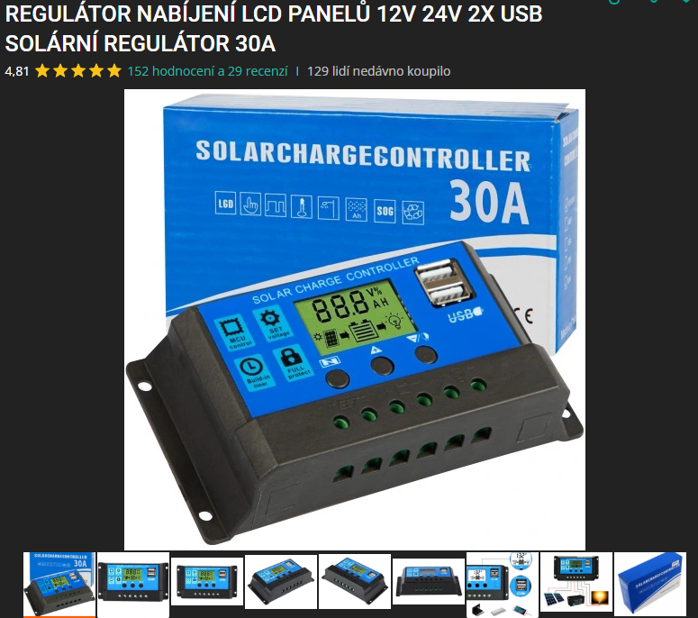

Celý náš rybí ekosystém bude napájen čistě z obnovitelných zdrojů. Použijeme **20W solární panel** s výstupem 12V, který bude přes den dobíjet **12V olověnou baterii**. Tato baterie bude napojena přes **solární regulátor nabíjení s LCD displejem** (typ: 12V/24V, 30A, 2x USB). Ten zajišťuje nejen stabilní napětí, ale zároveň chrání systém proti přebití, podbití a zkratu. Tím pádem máme řešenou jak bezpečnost, tak i efektivitu.
Celková plánovaná spotřeba systému (LoRa, filtrace, vzduchování, základní mikrokontroler) nepřesáhne **12W**, což dává dostatečnou rezervu. I kdyby se během dne nenabilo úplně ideálně, baterie s kapacitou cca **7Ah** vydrží udržet systém v chodu i **několik hodin přes noc**.
Jako mozek systému zatím zvažujeme buď klasické Arduino UNO, nebo modernější ESP32. ESP32 má výhodu v nízké spotřebě a zabudované Wi-Fi/Bluetooth konektivitě, což by umožnilo bezdrátový monitoring nebo ovládání přes telefon. Pokud bude třeba připojit více analogových senzorů, může Arduino vyhrát kvůli větší stabilitě a kompatibilitě.
Každý větší prvek (čerpadlo, ESP32, regulátor) bude mít vlastní pojistku 3A– to je dostatečné pro provoz, ale zároveň chrání před přetížením nebo požárem. Celé vedení bude ve vedené v plastových žlabech, napájení bude oddělené od datových kabelů kvůli rušení.
Do budoucna je možné systém rozšířit o **senzor teploty vody, napětí baterie, nebo třeba **plovákový spínač**, který detekuje hladinu vody. Vše může být odesíláno přes **LoRa modul** do domácí základny, případně přes ESP32 rovnou do cloudu. Pro případ výpadku slunce se uvažuje o **mini DC měniči s USB-C vstupem** pro dobití baterie z powerbanky.
Navržený systém je **levný, soběstačný a snadno opravitelný**. Nepotřebuje přívod ze sítě, je přenositelný, a zároveň se dá vyladit na míru podle aktuálních potřeb akvária nebo experimentu. Navíc celý systém učí práci s mikrokontroléry, napájením a přemýšlení v souvislostech.